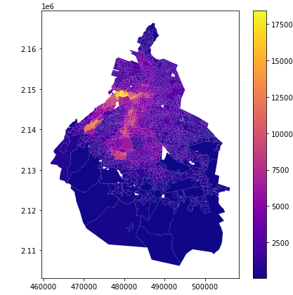
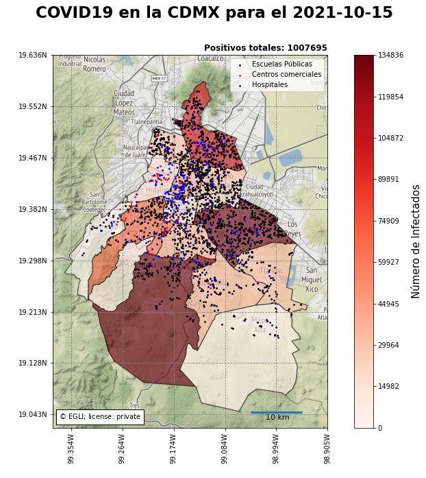

Las decisiones correctas se toman con base en datos.
Servicios Como profesional especializado en el análisis de datos y científico de datos, me dedico a convertir los datos en información valiosa y comprensible. Mi meta es optimizar los resultados y ayudar a tomar decisiones acertadas.
Cuento con conocimientos en el procesamiento de datos y empleo técnicas de visualización de los mismos para exponer los resultados. Utilizo SQL y Python en mis proyectos de análisis de datos.
Ejemplos
Procesamiento de datos espaciales
Me plantee el objetivo de realizar un análisis de datos que aportara valor agregado a un negocio de bienes raíces, con el uso de la tecnología. Realice el análisis del valor predial de las casas en la ciudad de México ya que los negocios de este tipo suelen requerir esto para:
Evaluación de propiedades para venta o alquiler: Para determinar el precio de venta o alquiler adecuado de una propiedad, estos negocios necesitarían analizar los valores prediales de propiedades similares en la misma área. Esto les ayudaría a establecer un precio competitivo y atractivo para los posibles compradores o inquilinos.
Inversión en bienes raíces: Si un negocio está considerando invertir en nuevas propiedades, un análisis de los valores prediales les permitiría identificar áreas de la ciudad donde los precios de las propiedades están subiendo o bajando. Esto podría influir en su decisión de dónde invertir.
Asesoramiento a clientes: Century21 también podría realizar un análisis de valores prediales para asesorar a sus clientes que buscan comprar o invertir en bienes raíces. Este análisis podría ayudar a los clientes a entender el mercado inmobiliario y a tomar decisiones informadas.
Resultado
Para saber más sobre este análisis de datos, se puede consultar el link debajo de la imagen

Análisis del valor predial en la CDMX
Monitoreo de COVID
Realice el análisis de datos de la locación que albergaba mas enfermos por COVID en el 2021. Transmitir esta información fue importante ya que de esta manera el sector salud podía determinar con facilidad en que lugares de la Ciudad de México debían concentrar más esfuerzos con el objeto de contener los contagios, alertar a la población y hacer lo posible por procurar la salud de los habitantes.

Análisis de COVID 2021
Machine Learning
Clasificación supervisada
Este proyecto implicó la clasificación supervisada de imágenes satelitales para generar información precisa y detallada sobre diversos objetos en el área conurbada de Guadalajara, Jalisco. Este análisis permitió identificar elementos como casas, bosques, agua, entre otros, de manera rápida y económica. La clasificación supervisada implica la categorización automática de píxeles en clases temáticas, lo que luego se utilizó para generar mapas temáticos y a partir de estos tomar decisiones respecto al manejo de ecosistemas, las áreas urbanas, etc. Para una revisión a detalle se puede consultar el enlace debajo de la imagen.
A lo largo de mi trayectoria me he capacitado en el área del análisis de datos, pues mas allá de ser un requisito en mi área profesional es mi más grande pasión. Se puede consultar un poco de mi trayectoria en esta sección.
{kind=link}